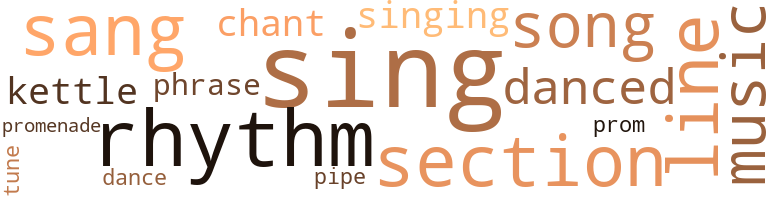
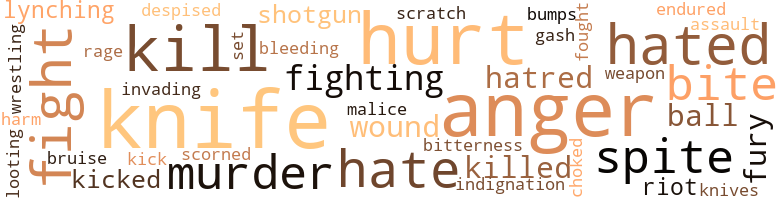
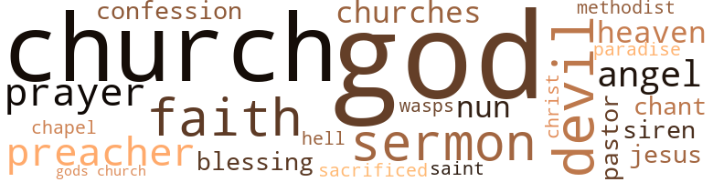

Rainbow Roun Mah Shoulder, by Bragg, L.B. (1984)
44 music-related terms matched in this text.
Most frequent terms in this topic: sing (6); rhythm (5); sang (4); section (4); line (4)
chant.n.01
Definition: a repetitive song in which as many syllables as necessary are assigned to a single tone
| word | sentence |
|---|---|
| chants | But tossing , calling names of people Alice did n't know , snatches of prayers and strange Creole chants . |
| chant | Morning sound of September birds , the junk man 's truck and jump tope chant on the front sidewalk Mack dressed in Black/silver buttons all down her back/drink my coffee drink my tea drink your coffee girl for it gets cold all around the neighborhood talk about me , me , me , bone you know they call it that if it 's made in England one had a roastin ear tied roun his neck . |
dance.n.01
Definition: an artistic form of nonverbal communication
| word | sentence |
|---|---|
| dance | The shadows closed , practicing a predestined dance . |
dance.v.02
Definition: move in a pattern; usually to musical accompaniment; do or perform a dance
| word | sentence |
|---|---|
| danced | The old lady at the river who danced all night . |
dance.v.03
Definition: skip, leap, or move up and down or sideways
| word | sentence |
|---|---|
| danced | They danced in the afternoon light , crawled toward her , running their green fingers through her fingers , laughing the same pealing laughter , the same yaah yaah , and finally , their spit landed in her hair . |
kettle.n.04
Definition: a large hemispherical brass or copper percussion instrument with a drumhead that can be tuned by adjusting the tension on it
| word | sentence |
|---|---|
| kettle | She went to put on the kettle and could n't lift it . |
| kettle | She set the kettle on the burner and gently pushed Florice into a chair . |
music.n.01
Definition: an artistic form of auditory communication incorporating instrumental or vocal tones in a structured and continuous manner
| word | sentence |
|---|---|
| music | The tingling music of Southern softness , the drawn out second syllable of laughter fell on the black cushion of female presence , rich in browns and punctuated with fertile smiles . |
| music | Grey , white , ivory , tan , a bell sound of silver outlined the waves , and they spoke of a gentle and grand music underlaid by the mother heart which never rests . |
| music | She folded the music slowly and put it under the organ seat . |
phrase.n.02
Definition: a short musical passage
| word | sentence |
|---|---|
| phrases | All she knew at that moment was that she had to get those nails out , and as she tore at it , she began to repeat phrases she had known all her life . |
| phrase | She had heard that phrase when she was hired . |
pipe.n.04
Definition: a tubular wind instrument
| word | sentence |
|---|---|
| pipe | He adjusted his pipe , which was carefully placed in an ashtray on the desk . |
promenade.n.01
Definition: a formal ball held for a school class toward the end of the academic year
| word | sentence |
|---|---|
| prom | If only that bleaching cream would work before the prom so she could make a good showing for Eugene . |
| promenade | Mac kept going , anxious to be done with this rather tedious promenade . |
rhythm.n.04
Definition: the arrangement of spoken words alternating stressed and unstressed elements
| word | sentence |
|---|---|
| rhythm | Together there was a Blackness about their love that called up African villages for her , and the primal river that ran through her veins had its rhythm altered by his touch . |
| rhythm | The branches of fir trees , bounced up and down in rhythm . |
| rhythm | Lordy , Lordy , no ... and she rocked in a rhythm of disbelief and overwhelming love lor the lear itself she felt . |
| rhythm | One , two , three , four , a rhythm as regular as a working man 's hammer , as if she were made of metal , catching him at the depths of a wine-induced sleep . |
| rhythm | Marsh grass looked as if it had been carefully combed , and the waters of the sound licked at the ferry in rhythm with the steam motor . |
section.n.01
Definition: a self-contained part of a larger composition (written or musical)
| word | sentence |
|---|---|
| section | They would have to sit in the colored section away from the good seats and behind the tent 's post , but that was n't cooling down the excitement of the twenty youngsters crowding around the bus 's door . |
| section | Harriet said selling popcorn in the colored section was n't the best job in the world cause all manner of common people come in and out of that place , especially for some of those movies no real God-fearing person would go to see , but Maye said she needed the money and besides it got her out of the house for awhile and she was restless as a cat without her kittens in the summer time . |
| section | The owner of the theater thought he 'd be perfect to have around and see that the girls he hired did n't steal the ticket or refreshment money at the colored section . |
| section | Well , in the Negro section of town you could n't he too choosy . |
sing.v.02
Definition: produce tones with the voice
| word | sentence |
|---|---|
| sang | He had built a fine , middle class Black church where there were two choirs , one that sang gospel , and one that sang " arranged " spirituals , to satisfy those who were a little more " discriminating " . |
| sang | He had built a fine , middle class Black church where there were two choirs , one that sang gospel , and one that sang " arranged " spirituals , to satisfy those who were a little more " discriminating " . |
| sing | And then all that to-do afterwards about choir practice and who would sing the solo . |
| sing | And then she began to sing . |
| sing | Robert had said , when buds sing ill midnight , " it 's God 's lullabye . " |
| sang | They dipped and sang to the invading ferry . |
| sang | " I know it was the blood , " her mind sang . |
| sing | It was permission to cook for someone and to sing someone to sleep , and permission to ask for a song . |
| sing | To step across this line is terrifyingly simple , always frightening , always complicated ; and always ingels sing . |
| sing | The tea began to sing and at the same time she heard Mac 's step . |
singing.n.01
Definition: the act of singing vocal music
| word | sentence |
|---|---|
| singing | She remembered the hair on his amis and the sound of Donald O'Conner 's singing in the rain coming through the speaker . |
| singing | That song kept singing inside her . |
song.n.01
Definition: a short musical composition with words
| word | sentence |
|---|---|
| song | Florice kept hearing an old gospel song go through her head as she watched Peaches carefully . |
| song | That song kept singing inside her . |
| song | It was permission to cook for someone and to sing someone to sleep , and permission to ask for a song . |
tune.n.01
Definition: a succession of notes forming a distinctive sequence
| word | sentence |
|---|---|
| tune | Somewhere outside , a car radio blasted a Frank Sinatra tune . |
| line | He was the kind who kept money in mattresses , and who kept " the other niggers in line " at the movie . |
| line | To step across this line is terrifyingly simple , always frightening , always complicated ; and always ingels sing . |
| line | In line behind a young boy going to Richmond whose youth was a trifle too shiny , she thought , " 1 have lived , have lived a long , long time . " |
| line | Joe had stood in line for two hours and when he got to the foreman , he had asked politely for a job , and the white foreman had looked up from his desk and said , " Well , we have a place here for a boy to clean up the latrine and sweep up the trash and clean out the bins . |
134 violence-related terms matched in this text.
Most frequent terms in this topic: knife (15); anger (13); hurt (12); kill (9); fight (7)
abrasion.n.01
Definition: an abraded area where the skin is torn or worn off
| word | sentence |
|---|---|
| scratch | He had said it , thinking she would kick or at least scratch , but none of that happened . |
anger.n.01
Definition: a strong emotion; a feeling that is oriented toward some real or supposed grievance
| word | sentence |
|---|---|
| anger | She tarried her anger like a sack of fire , and it burned with a toxic fury that left her exhausted and drained after each dream . |
| anger | And it covered an anger so deep that it reached into places no one had ever seen . |
| anger | Florice stalked that anger , to feel it , to know it . |
| anger | The cavern was colored midnight , and Peaches was lost somewhere under layers and layers of fleshly anger . |
| anger | Afraid to accept , afraid to reject , and finally resting on anger . |
| anger | With every circle made by the phone numbers the sickness grew , until she thought out loud why this one , Lord , why and what do I do with my anger , some of it to you , Lord , some of it , and the sickness turned toward herself as she all at the same time thought how her energy must go in the child 's direction quickly quickly push the sickness back and think of her and Alice . |
| anger | She had cracked four bones before she snatched her anger back from death . |
| anger | The anger did n't matter , the hurt , the confusion , the memories - none of it would matter ? |
| anger | The rage was climbin up his legs and when it reached his hands , she knew she would be in danger unless she could talk his anger back to that small lump where it had hidden for so many months . |
| anger | She kept hetself from saying it hurt , because she knew he would like that and that it would feed his anger . |
| anger | She felt sorry for him , and shame at her long years of anger . |
| anger | Her eyes were wet with understanding ; she was nodding her head and rocking back and tortn ana Mac 's anger brought her no fear . |
| anger | He started out answering , knowing his response would be no response at all , feeling anger at himself , and strangely , at Joe and feeling totally inadequate . |
bleeding.n.01
Definition: the flow of blood from a ruptured blood vessel
| word | sentence |
|---|---|
| bleeding | In a few minutes Florice changed the towels , and as the bleeding stopped , Harriet relaxed into exhausted sleep . |
bruise.n.01
Definition: an injury that doesn't break the skin but results in some discoloration
| word | sentence |
|---|---|
| bruise | Mac grabbed her ami and left a bruise mark from his thumb . |
bump.n.01
Definition: a lump on the body caused by a blow
| word | sentence |
|---|---|
| bumps | The house was very cold in the December night , but there were no chill bumps on her arms and she left the back door open and went out without her coat . |
contemn.v.01
Definition: look down on with disdain
| word | sentence |
|---|---|
| despised | Peaches took at a look at the ripples of flesh ; she was familiar with the every pore and she hated herself into being what she was - like wallowing in herself , like stuffing herself with a despised food just because maybe , maybe it she got enough of it , food would lose its great power . |
| scorned | I can not go on , knowing you believe that I scorned you and your love . |
cut.n.05
Definition: a wound made by cutting
| word | sentence |
|---|---|
| gash | It was a strange tree , full of knots and grew somehow mostly on one side , its branches reaching out toward the north rather than the south ; the south side had a big gash in it where some children had ridden a branch off and Florice had worried about the tree , and doctored on it with black tar . |
fight.n.05
Definition: a boxing or wrestling match
| word | sentence |
|---|---|
| fight | " We got to get some fight back in you , gurl . " |
| fight | It was an old brown felt he had taken oft someone after a fight on the job . |
| fight | I think you gon na hafta fight for our people . |
fight.v.02
Definition: fight against or resist strongly
| word | sentence |
|---|---|
| fight | Sundays rolled around and around and more and more sermons were about the hatred they had to fight and the courage it took to " stand up for Jesus , " and then Florice began to love him more for his courage than for his charm , and that was her undoing . |
| fight | Bernice was yellin and half crazy , and the rest of us just did n't know what to do and that snake just slid on off ; I reckon we was too many to fight . |
| fighting | Now he was somewhere in North Africa and Harriet was the mother of a little girl whose father was fighting in a war . |
| fought | War was raging on the other side of the world but Alice thought there was no reason it had to be fought on her back stoop and she made her way from the front bedroom through the small kitchen of her rented house . |
| fight | Go fight your pussy battles somewhere else . " |
| fighting | It was important to make sure nobody would get in cause Daddy was over there , long ways away , fighting for them . |
| fighting | " Why am I fighting ? " |
| fight | " There ai n't nothin to fight . |
| fighting | She could still hear his voice fighting the enormity of the ( Kean ; it would be with her a long time . |
fury.n.01
Definition: a feeling of intense anger
| word | sentence |
|---|---|
| fury | She tarried her anger like a sack of fire , and it burned with a toxic fury that left her exhausted and drained after each dream . |
| fury | All the joy for just bein on the earth alive and all the fury at having joy denied . |
| rage | The rage was climbin up his legs and when it reached his hands , she knew she would be in danger unless she could talk his anger back to that small lump where it had hidden for so many months . |
| fury | They were in the eye of the storm and the only way to safety was through the water 's fury . |
gag.v.06
Definition: cause to retch or choke
| word | sentence |
|---|---|
| choked | She brewed the herbs and poured them down Harriet , who choked on the taste and tried to push the cup away Florice grabbed her shoulders . |
hate.n.01
Definition: the emotion of intense dislike; a feeling of dislike so strong that it demands action
| word | sentence |
|---|---|
| hatred | Sundays rolled around and around and more and more sermons were about the hatred they had to fight and the courage it took to " stand up for Jesus , " and then Florice began to love him more for his courage than for his charm , and that was her undoing . |
| hatred | You could hold on to the pain and not call it hatred . |
| hate | Sure hate to be a outsider . " |
| hatred | Often she saw the glint of hatred in his eyes when he said that . |
hate.v.01
Definition: dislike intensely; feel antipathy or aversion towards
| word | sentence |
|---|---|
| hated | She always hated to hear him say that . |
| hate | I recollect the Master say " the world would hate you if He changed yo name , " that 's what l recollect . |
| hated | The bag was full of leftover baked chicken and artichoke dressing , which she hated but took anyway , and an unopened can of crabmeat which she had slipped in just because it was easy to do that and get away with it . |
| hated | They hated her for her bodacious fat and her refusal to excuse it . |
| hated | They hated her for being proud of her white ladies and for not complaining , with them , that there was just so much white folks would dish out and then you had to sit down on the job and have a smoke . |
| hated | Most of the neighborhood hated Peaches enough to leave her isolated , but feared her enough to know she would have you , have you all , if she was messed with . |
| hated | Peaches took at a look at the ripples of flesh ; she was familiar with the every pore and she hated herself into being what she was - like wallowing in herself , like stuffing herself with a despised food just because maybe , maybe it she got enough of it , food would lose its great power . |
| hated | Ronnie knew all about the fourteen bottles of cheap wine that had been found under Sara Helkin 's bed when she died and about the fat man she kept company with from Atlanta , and she knew that Aunt Doris Fannis really hated her husband but was afraid to leave him . |
| hate | Always did hate diggin ' for pennies in a handbag . |
| hate | Nothin ' I hate worsen bein cold . |
| hate | Please do n't hate me . |
| hate | Ooh gurl , always did hate to he cold . |
hurt.v.04
Definition: cause damage or affect negatively
| word | sentence |
|---|---|
| hurt | Florice 's head had hurt most of the day . |
indignation.n.01
Definition: a feeling of righteous anger
| word | sentence |
|---|---|
| indignation | Her sense of indignation was desperately helpless . |
injury.n.01
Definition: any physical damage to the body caused by violence or accident or fracture etc.
| word | sentence |
|---|---|
| hurt | This humming hurt that swelled up from below and slowly boiled to the surface . |
| hurt | On the heart 's beating drum , on the hurt that ran down the street 's gutter . |
| hurt | From sun to sun there stretches a hurt that never lets itself be felt all the way . |
| hurt | His chest hurt like hell . |
| hurt | Her nose hurt and her toes felt funny . |
| hurt | Sanction of antique junk that had seen enough to absorb any perversion , any hurt and anything you were afraid to admit somewhere else . |
| hurt | The anger did n't matter , the hurt , the confusion , the memories - none of it would matter ? |
| harm | I do n't mean no harm , but , men , they just home long enought to bring a empty stomach . |
| hurt | She could see his mouth moving in the waves , his beautiful hurt eyes crashing between each word . |
invade.v.01
Definition: march aggressively into another's territory by military force for the purposes of conquest and occupation
| word | sentence |
|---|---|
| invading | They dipped and sang to the invading ferry . |
kick_back.v.02
Definition: spring back, as from a forceful thrust
| word | sentence |
|---|---|
| kick | He had said it , thinking she would kick or at least scratch , but none of that happened . |
| kicked | I used to go with a man said that coffee was the reason many folks were still married cause it kept lots of wives outa men 's hair , hee hee .... " and Ronnie gave up all hopes of dessert as she kicked the nearest pebble into the gutter and started down the front walk to their door . |
| kicked | She kicked at a stone on the sidewalk on her way home . |
kill.v.10
Definition: cause the death of, without intention
| word | sentence |
|---|---|
| kill | Cowardly , cowardly pain , she thought ; not to be able to kill him in herself with deed or dream . |
| killed | " What you think about my lady 's being killed like that , Miss Florice ? " |
| kill | He wanted her to know she did n't kill him . |
| kill | If I ever see the nigger , I gon kill him mahself ! " |
| kill | She was not going to kill anybody at any time . |
| kill | When Miss Florice and Mama started talkin about a hand that summer , she remembered she had n't told , and her worries started and her dream so she could n't stand it , and she thought maybe she should tell Miss Florice cause Mama would kill her for goin in that place . |
| kill | Or they would shock her senseless , or they would kill her . |
| kill | Those others who did n't know Peaches was a demon sleeping , they would be at the mercy of a monster who swam in and out of their lives , and she would become a shield for Peaches until she decided to kill again . |
| kill | " That old white bitch , " she mumbled , " who cares if I did kill her ? " |
| killed | Huge numbers , however , are killed by the so-called parasitic wasps and flies , of which there are thousands of species . |
| killed | They kept hearing things about riots in the North , and Black boys being killed in the streets . |
| kill | They sat together in the dark , through the hour it must have taken to kill . |
knife.n.02
Definition: a weapon with a handle and blade with a sharp point
| word | sentence |
|---|---|
| knife | She had picked up a table knife and was fingering the edge . |
| knife | The knife was back on the table next to the butterdish . |
| knife | And bout half mile out they run into that lady Miss Florice , who said ' y all all come with me ' and , ' anybody got a knife ? ' |
| knife | and Junie Bug he have a pocket knife and he give it to her . |
| knife | And she take the knife , and she cut around that bite and Durell screamin , and Miss Alice holdin the younguns back and I saw blood spurtin ' out and like to took sick . |
| knife | Peetie would remember how he had tried to tell about the snake bite and the awful cutting , but they just shut him up , and Junie Bug left his knife to rust in the woods and that was the only evidence . |
| knife | He took out his pocket knife . |
| knife | There would n't be another soul who 'd know about the pocket knife from a New Orleans shop . |
| knife | He stuck the knife in the tree he had been standing under so the pearl handle showed . |
| knife | She had told only Alice about the knife . |
| knife | " Alice , that 's enough ! " she slammed the knife down on the sofa in Alices living room . |
| knives | How long does it take to tell a friend that the last time you saw your husband , so very long ago in another world , there were knives of pain in his eyes that you put there ? |
| knife | But what she really wanted to say was , I 'd like to know if he 's still alive ; if he 's still a person ; if I left him anything to live for ; if he 's ever been happy ; if I just think I remember the knife and the young man I thought I loved and the passion of that day when he thought he loved me . |
| knife | She calculated where her biggest butcher knife was and opened the inside storm dorm . |
| knife | She pur down her knife and called out to Alice , " be right back . " |
| knife | The papers were full of how many Negro boys were looting and how these unruly mobs of Blacks caused death and destruction in the fair city of New York all over some wild criminal of fifteen years old who had stolen a knife to commit a terrible and unspeakable crime . |
looting.n.01
Definition: plundering during riots or in wartime
| word | sentence |
|---|---|
| looting | The papers were full of how many Negro boys were looting and how these unruly mobs of Blacks caused death and destruction in the fair city of New York all over some wild criminal of fifteen years old who had stolen a knife to commit a terrible and unspeakable crime . |
lynching.n.01
Definition: putting a person to death by mob action without due process of law
| word | sentence |
|---|---|
| lynching | You 're talking about puttin yourself and anyone who helps you in danger ; about the Klan and lynching . |
| lynching | Florice and Alice remembered the lynching they had lived through in 1919 and shuddered . |
malice.n.01
Definition: feeling a need to see others suffer
| word | sentence |
|---|---|
| spite | He liked her ; in spite of himself . |
| spite | Well , they 'd see if she could n't he a woman alright , in spite of , no maybe because of her hills and valleys of fat . |
| spite | Alice knew Florice had hope because she wanted to have hope , and in spite of what she really knew , anyhow , Alice thought to herself , " ai n't nobody supposed to know everything . " |
| spite | Far as she knew , there was still evil everywhere in spite of the good church deacons . |
| malice | Florice hoped not , she hoped he would never know , but someone would no doubt tell him with great sympathy and equal malice and he would he forced to face their guilt and his own and to come someway to live with the shame of being unwanted by either mother or father . |
| spite | She had loved him for four years , in spite of the rules or any of the rest of it . |
murder.n.01
Definition: unlawful premeditated killing of a human being by a human being
| word | sentence |
|---|---|
| murder | And just as we got up to go up the big hill we was wantin to climb , Durrell , he screamed almighty bloody murder and we saw the snake . |
| Murder | Murder was murder , she would say . |
| murder | Murder was murder , she would say . |
| murder | She held murder in her heart in reserve for the clerk . |
| murder | Father Canty had lit the candle in one whose feelings were strong enough to lead her to attempt murder and to consider the veil . |
musket_ball.n.01
Definition: a solid projectile that is shot by a musket
| word | sentence |
|---|---|
| ball | They started out , the wool ball on Ronnie 's blue knit hat bobbing up and down . |
| ball | In this nether space she saw-a ball of underwater emerald green slowly form . |
| balls | There was even a bed with black posts , big round black balls on the posts , a big chest of drawers with ugly white knobs , and a mirror with curly-cues all around it . |
pain.v.02
Definition: cause emotional anguish or make miserable
| word | sentence |
|---|---|
| hurt | and then she say y' all , Junie and Peetie , hold him down ; and she say , ' this here 's gon na hurt you , Durell , but it 'll save your life . |
| hurt | It was not good to get too much snow on your gloves , cause they would turn wet and your fingers would hurt . |
| hurt | The more wonderful they are , the more they hurt . |
rape.n.03
Definition: the crime of forcing a woman to submit to sexual intercourse against her will
| word | sentence |
|---|---|
| assault | And he had laughed too - and then he had come to Robert and said he came South cause his Mama was sick and what was he gon na do , and Robert had said he 'd pray over it and now Joe Gray was in jail for assault and lucky to be alive because he 'd pushed a white man on the street and times were hard . |
resentment.n.01
Definition: a feeling of deep and bitter anger and ill-will
| word | sentence |
|---|---|
| bitterness | And on the other side was the oily spill of bitterness that he occasionally slipped into and used to justify his cruelty which had become habitual with age . |
riot.n.01
Definition: a public act of violence by an unruly mob
| word | sentence |
|---|---|
| riots | They kept hearing things about riots in the North , and Black boys being killed in the streets . |
| riot | There had been a terrible riot up in Harlem just the week before . |
shotgun.n.01
Definition: firearm that is a double-barreled smoothbore shoulder weapon for firing shot at short ranges
| word | sentence |
|---|---|
| shotgun | Ole Bubba lived in a shotgun house out near the edge of the state college farm . |
| shotgun | They knew only the twenty-eight square feet of their shotgun house and they knew only , only , the truth of blowing fear . |
sic.v.01
Definition: urge to attack someone
| word | sentence |
|---|---|
| set | So we sat down on the nearest thing we could see to set on , you know , and it was some old dead logs piled up in the woods and we was all hot and sweaty like . |
sting.n.03
Definition: a painful wound caused by the thrust of an insect's stinger into skin
| word | sentence |
|---|---|
| bite | And she take the knife , and she cut around that bite and Durell screamin , and Miss Alice holdin the younguns back and I saw blood spurtin ' out and like to took sick . |
| bite | " And then , " he would say , dramatically , " she put her hands on Durell 's leg where that snake done bit him , and he done been cut , and she closed her eyes and you could see her mouth was saying something quiet , and when she tuk her hands away , and here 's my hand to God , when she tuk her hands away , the snake bite had disappeared ! |
| bite | And then when Durell fainted , of course , they had to send for his folks and the doctor and all , and carry him out of the woods and the grown folks just took over asking questions , but they only asked Miss Alice and Miss Florice , who said something about an insect bite and maybe he should be checked at the hospital . |
| bite | Peetie would remember how he had tried to tell about the snake bite and the awful cutting , but they just shut him up , and Junie Bug left his knife to rust in the woods and that was the only evidence . |
| bite | Ronnie had taken that first careful bite of the warm cookie and there was a crumb falling off her chin which Florice firmly wiped with a napkin , between " Miss " and " Florice . " |
weapon.n.01
Definition: any instrument or instrumentality used in fighting or hunting
| word | sentence |
|---|---|
| weapon | In a blue blur , the weapon , the leg and noise of synthetic rather impacted , and somewhere between swallowing her faint nausea of ar , and eternity , Ronnie heard Rebecca Florice Letenielle say to her , " Now here sit down . " |
weather.v.01
Definition: face and withstand with courage
| word | sentence |
|---|---|
| endured | What it had endured . |
wound.n.01
Definition: an injury to living tissue (especially an injury involving a cut or break in the skin)
| word | sentence |
|---|---|
| wound | She took her long hair down from its wound braids . |
| wound | Some said she sucked out the blood and closed up the wound , just like that . |
| wound | Faint purple light filtered by dust , and a rag wound around something . |
wrestle.v.01
Definition: combat to overcome an opposing tendency or force
| word | sentence |
|---|---|
| wrestling | He turned , screaming , frightened , wrestling with this enormous , confused , impotence . |
168 religion-related terms matched in this text.
Most frequent terms in this topic: God (53); church (46); faith (7); devil (7); sermon (6)
blessing.n.05
Definition: the act of praying for divine protection
| word | sentence |
|---|---|
| blessing | Now the tears were mostly private , under covers , and late at night , but holidays were as much a curse as a blessing . |
| blessings | She had wanted to put her grief away , have a lovely dinner , and count her blessings hut she found it was n't as easy as just deciding to do it . |
chant.n.01
Definition: a repetitive song in which as many syllables as necessary are assigned to a single tone
| word | sentence |
|---|---|
| chants | But tossing , calling names of people Alice did n't know , snatches of prayers and strange Creole chants . |
| chant | Morning sound of September birds , the junk man 's truck and jump tope chant on the front sidewalk Mack dressed in Black/silver buttons all down her back/drink my coffee drink my tea drink your coffee girl for it gets cold all around the neighborhood talk about me , me , me , bone you know they call it that if it 's made in England one had a roastin ear tied roun his neck . |
chapel.n.01
Definition: a place of worship that has its own altar
| word | sentence |
|---|---|
| chapel | She imagined he was going to launch into his usual chapel speech about mental , physical and spiritual strength and purity . |
church.n.02
Definition: a place for public (especially Christian) worship
| word | sentence |
|---|---|
| church | He had to live day by day with the knowledge that he had sent Joe away with no real answer , and , by God , he would make it up or he 'd leave the church . |
| church | The NAACP was invited to meet at the church . |
| church | By the end of a year Robert was president , and those who did n't like it , either dropped off coming to church or changed their minds . |
| church | The knowledge that when she turned smartly and sashayed down the church hall , he would just barely be able to hide his excitement was delicious to Florice , had kept her going during long nights when she hit her teeth , so wanting she was . |
| church | It was soft , much softer than the dark blue church outfit . |
| church | Bent over , as if lighting a flame , really to keep from looking at her face , golden , in the dimness of the church . |
| church | She should go to church tomorrow , but Lordy , it sure would be good to sleep instead . |
| church | He had built a fine , middle class Black church where there were two choirs , one that sang gospel , and one that sang " arranged " spirituals , to satisfy those who were a little more " discriminating " . |
| church | Robert had just left , having weakly apologized that his church was calling him to Pittsburgh , and that he could n't say no , and that his wife was after all his wife , and that the move would be good for her , and she knew ... she knew he had asked to he transferred , and she knew that nobody would he changing churches at his age except to become a bishop , and ... she knew it could n't go on forever now , did n't she ? |
| churches | Robert had just left , having weakly apologized that his church was calling him to Pittsburgh , and that he could n't say no , and that his wife was after all his wife , and that the move would be good for her , and she knew ... she knew he had asked to he transferred , and she knew that nobody would he changing churches at his age except to become a bishop , and ... she knew it could n't go on forever now , did n't she ? |
| church | " You ai n't never seen such a disgrace and to do , confessin in church , and all about that baby , well , I never , Alice . " |
| church | Florice thought of the foot washers ' church - no wonder they did that - did everyone good to get down on their knees every once in a while . |
| church | They had walked through all the Catholic churches in town while he explained the different objects - church furniture , he had said , and she had thought that was a peculiar name to call pews and such . |
| church | Harriet saw some of the students from Centenary , and some of the members of her church , but no one looked interested in walking home with a crying five-year old . |
| church | Always playing good in some church . |
| church | Some of the church deacons wondered if she should be put away , talking heathen the way she did about evil spirits . |
| church | Far as she knew , there was still evil everywhere in spite of the good church deacons . |
| church | " It could be the Petersons from church . " |
| church | Sent me a post card from some church conference up north , I think it was Pittsburgh or something . " |
| church | Had a operation last month , and has a temporary assignment in a small church up there . |
| church | And imagine , left a big church like ours to fill in for someone ? |
| church | He had been here for a change , not a lover who belonged to the church , not a friend who belonged to a man as wife , not the child of another woman , but finally hers . |
| church | The church was contacted and Florice wanted the child more than anyone suspected . |
| church | " Naw , not some man , some half a man ; the kind that weans dresses to church ! " |
| church | It was 7:00 and she had to find that church . |
| church | " I know what was goin on inside you , girl , and it did n't have nothin to do with God or no church , or no healin . |
| church | The church was rather small and worn and stood on a busy street comer that was in a poor section of the city . |
| church | She tried the church door . |
| church | I left you because I was afraid that I could not holdout , that I would lose Jessie , you , and the church . |
| church | Florice found herself alone in the church kitchen , putting the finishing touches on the cleaning up . |
| church | He went to the back of the church , opened the door to his office , and began the sermon for Sunday . |
| church | That was n't easy in a pre-furnished place where the church deacons had decided what would or would n't he bought , and what was " suitable " for a preacher 's house . |
| church | He could blame it on the devil , but he never really believed in such things , no matter what he told the church on Sunday mornings , and there was one thing he did know ; he knew the difference between the devil and Robert Brown and it was painfully clear to him that this desire belonged to Robert Brown . |
| church | Time to go play for the church choir practice . |
| church | At least three people got happy and Miss Althenia Taylor joined the church , which was a surprise to everybody since she had been holding out for years . |
| church | To explain the new money-raising project , to ask support of the women of the church , to see her . |
| church | Robert was just arriving at the church and met Joe in the parking lot . |
| church | Joe said something hopeless about the influence of the church . |
| church | He had been called into the mayor 's office and asked to help " quiet things down " in his church . |
| church | That night they had planned a little supper with June Peters and her sister , friends from the church . |
church.n.04
Definition: the body of people who attend or belong to a particular local church
| word | sentence |
|---|---|
| Church | 1936 Mount Olive AME Church was not yet to know the delight of shared scandal , at least if it depended on Rebecca and Robert . |
| Church | Church people . |
| church | They had sat in the church office while he talked nervously of his faith almost as if it were an animal that had been domesticated and could go wild . |
| churches | She had a sudden impulse to ask him why they used so much marble in Catholic churches . |
| church | There was church . |
| church | She knew she did n't want him at the time , only everybody at church was goin on in the kitchen about how Willie Houston was sweet on Alice . |
| churches | They had walked through all the Catholic churches in town while he explained the different objects - church furniture , he had said , and she had thought that was a peculiar name to call pews and such . |
| church | She knew too that Rebecca Florice was there like the dirt was there in the garden , like the Baptist church was there in the South , that her friend was there . |
| church | The word had come at church , that there was a child who needed a home . |
| church | They had mint tea three weeks later and Marie forgot about her sister talking to herself and told all her church friends how her sister grew the prettiest herb garden she had ever seen and grew plants she never heard of . |
| church | Robert walked quietly over to the church office and sat for a long time wondering what he should do . |
confession.n.05
Definition: the document that spells out the belief system of a given church (especially the Reformation churches of the 16th century)
| word | sentence |
|---|---|
| confession | " Well , " she said only after an appropriate dramatic pause , " Addie Mae stood up yesterday morning with confession on her mind . |
| confession | And you know , Alice , you could just tell Addie Mae took her sweet time startin that confession , cause she wore her green hat with the pink rose in it and her green suit , and her white gloves with the one button at the wrist and oh honey she was struttin her stuff ! |
curate.n.01
Definition: a person authorized to conduct religious worship
| word | sentence |
|---|---|
| pastor | What about the pastor 's house ? " |
| pastor | He could have been any pastor visiting any well-thought-of single lady , president of the Ladies ' Auxiliary and secretary of the Star of Bethlehem . |
eden.n.01
Definition: any place of complete bliss and delight and peace
| word | sentence |
|---|---|
| heaven | Rain had come , too , like the springs of heaven over-flowin ' , she thought , but she was glad . |
| heaven | Alices voice sounded down the corridors of heaven and hell in a cracking sob and she began to break her best plates , that were stacked up on the kitchen table . |
| heaven | Come in , for heaven 's sake and have some coffee . |
| paradise | Rebecca saw little of this natural paradise , thinking deeply about her coming conversation with Mac . |
god.n.03
Definition: a man of such superior qualities that he seems like a deity to other people
| word | sentence |
|---|---|
| God | " The boy is dead " They all sat , stunned as if waiting for God 's next move . |
| God | He had to live day by day with the knowledge that he had sent Joe away with no real answer , and , by God , he would make it up or he 'd leave the church . |
| God | So far away that it felt like God had left her behind , and He was laughin at her havin to face this temptation twice . |
| God | It is you who belong to God , not me . |
| God | You ai n't the first young woman made a mistake , and God nows you ai n't gon na be the last . |
| God | She sat still , he could not see the awful movement of her blood or hear the cavernous echo in her ear - " it is you who belong to God , you who belong . " |
| God | Well , God knows there 's many a nigger done come to the Lord 's table with a heart that needs to be washed and hung out to dry ! |
| God | She was n't feel in nothin , not the glory , not the windful excitement of shakin trees between her legs , not the white light of God 's love - nothin . |
| gods | The gods would know exactly who it was . |
| God | She lit the candles and began to pray quickly but intensely , asking God to heal Florice and to make the awful deed powerless . |
| God | It was in the light that shone from the slightly odd lady , who could see that a hungry person will eat three times what she needs , and do God knows what else to make life seem livable . |
| God | Everybody knew Miss Florice was a nice God fearin lady , even if she was a little strange . |
| God | It had not really been a voice from God knows where telling her to heal . |
| God | " And then , " he would say , dramatically , " she put her hands on Durell 's leg where that snake done bit him , and he done been cut , and she closed her eyes and you could see her mouth was saying something quiet , and when she tuk her hands away , and here 's my hand to God , when she tuk her hands away , the snake bite had disappeared ! |
| God | What if God was n't really there , hut only her frantic hope , so she would n't be alone in her strangeness ? |
| God | So many times she had heard folks talking about how some people did n't really believe in God but just would n't admit it . |
| God | Maybe God was a cheat and there was no real reason to love anybody except yourself . |
| God | Robert had said , when buds sing ill midnight , " it 's God 's lullabye . " |
| God | " God 's lullabye . |
| God | How was she to do anything for God with this plodding man , and this woman 's pain ? |
| God | He knew she was always hot and she thought she was foolin somebody with that stuff about God . |
| God | Thank God for President Benedict . |
| God | God gives gifts , she thought , and they are much to be feared . |
| God | There were some things to keep between you and God . |
| God | It was not that seeing him was dangerous , which it was , it was not that she hoped for anything with him really , hut there was with him an understanding of her nature , her passion , her yearning toward the mystical , her quiet , rumbling store , that kept pushing her not so gently toward that great river he called God . |
| God | Ronnie was n't sure she had done the right thing by telling Trudy , and that night she asked God to help Trudy keep her mouth shut . |
| God | God knows , he 's your child . " |
| God | And God know 's that 's how it usually is . |
| God | Why had God taken her only friend ? |
| God | But really , Mac , I was sittin by the fire and I coulda ' sworn I heard a voice say I was supposed to heal folks and give my life for God and all , and I just did n't know what to do , Mac , I just did n't know what to do , so I stopped talkin to you or anybody else , Mac , and I just been talkin to God and I just could n't stand for you to touch me , I was just so scared and ... " Florice looked up at Mac and she knew immediately she had made the last mistake the marriage could hold . |
| God | But really , Mac , I was sittin by the fire and I coulda ' sworn I heard a voice say I was supposed to heal folks and give my life for God and all , and I just did n't know what to do , Mac , I just did n't know what to do , so I stopped talkin to you or anybody else , Mac , and I just been talkin to God and I just could n't stand for you to touch me , I was just so scared and ... " Florice looked up at Mac and she knew immediately she had made the last mistake the marriage could hold . |
| God | After all these years , she knew when God was playing and when He was serious . |
| God | " I know what was goin on inside you , girl , and it did n't have nothin to do with God or no church , or no healin . |
| God | God bless you always . |
| God | But she could still forgive and she could give whatever was hers to give , and if God had any mercy at all , Robert would know before he died that she had finally understood his fear . |
| God | It comes risin ' up like that wave our there , moves me to do somethin different , to help make folks feel better , to love folks so I could cry and cry , and I ca n't say no to that - that 's God , Mac , that 's got to be God . " |
| God | " God has called me . " |
| God | You are my special child , blessed with some of God 's most wonderful and dangerous gifts . |
| God | But it means most that God wants you to do something for Him . |
| God | I thought that what I would leave you as I went home to God was not any of my few things , though you will find a box of treasures if you look under your bed , but mostly I can leave you what I have learned in strugglin through the fiery furnace . |
| God | Remember that God is everywhere . |
| God | I want you to remember that God does n't put nothin on you you ca n't bear . |
| God | Remember that love is the only thing that matters in God 's world and you got to be about loving folks , so what you got , use it for love . |
| God | From God to me ; from me to you . |
| God | God 's rainbow is a promise . |
| god | " ... it was some god , it was some god you were in bed with , not that half-white motherfucker with the backwards collar ! |
| God | It comforted , like knowing when you are finally lost in the woods and you sit down under a tree and wait for God to tell you which way is out . |
| God | And when they both knew it was over , Florice came back to the world and they rose to go in the house , to lock the doors and to join the sleepless night of those who guarded what they had in terror , and those who grieved that their God had once again seen fit to remind them what faith is . |
| God | God looks after his children . " |
| God | She was in it now , she thought , God help me . |
| God | God touches those that 's got the power , Mum . |
| God | God bless you , Mam , God bless you . " |
| God | God bless you , Mam , God bless you . " |
| God | " Mac , my sister 's got a place up in North Carolina , and she say it good jobs up there in the mills , and God knows you ai n't got no reason to stay here in these cane fields . |
| God | Father Canty had said the Agnus Dei should be sweet but not so plaintive , God did n't want humble pie . |
hell.n.01
Definition: any place of pain and turmoil
| word | sentence |
|---|---|
| hell | What kind of hell was this freedom anyway ? |
jesus.n.01
Definition: a teacher and prophet born in Bethlehem and active in Nazareth; his life and sermons form the basis for Christianity (circa 4 BC - AD 29)
| word | sentence |
|---|---|
| Jesus | " Oh , my Lord , my Lord Jesus , have mercy on us all , his chillun , " and she caught herself on the tree just before she fell forward all the way . |
| Jesus | You been strong for a long time Ronnie Jesus laid his hands on you when you come here . |
messiah.n.01
Definition: any expected deliverer
| word | sentence |
|---|---|
| Christ | Not the candles you loved , not that stinkin ' incense , not even that Christ on the cross , but some god ! " |
methodist.n.01
Definition: a follower of Wesleyanism as practiced by the Methodist Church
| word | sentence |
|---|---|
| Methodist | " Well , there 's a house across the street there , a two-story white house at the far comer of the campus and that house is owned by Bluford St. Methodist church . |
nun.n.01
Definition: a woman religious
| word | sentence |
|---|---|
| nuns | The scrub brush made that peculiar slurp scratching sound - that sound that sailors on board ship have shared with convent nuns and with those everywhere whose hacks have ached . |
| nun | No one was in sight except a loi nun who walked the halls silently . |
| nun | Some day , she would understand that she could be both murderer and nun , and she would accept the gift . |
prayer.n.01
Definition: the act of communicating with a deity (especially as a petition or in adoration or contrition or thanksgiving)
| word | sentence |
|---|---|
| prayers | But tossing , calling names of people Alice did n't know , snatches of prayers and strange Creole chants . |
| prayers | After a while she could n't tell the difference between her fear and her prayers and everything became a confusing mess of words and dread . |
| prayer | There 'd be a prayer meetin tonight , and Wednesday , early evenin ' choir practice . |
| prayer | After a few minutes of prayer , Florice opened her suitcase and took our the flower pot and the daisy dress . |
| prayers | It had been a long time since he had believed in his own prayers . |
preacher.n.01
Definition: someone whose occupation is preaching the gospel
| word | sentence |
|---|---|
| preacher | And there were small knots of white men on the edge of town in coveralls with tobacco stains , nervously watching and arguing about what should be done and what should n't be done about that uppity nigger who had got what he deserved in jail and whose preacher had come to the jail and complained about not being able to see him . |
| preacher | She kept remembering there was some reason she should be grieving , and then his eyes would come back , and his voice , screaming about the half-white preacher . |
| preacher | The kids were reasonably happy and not unreasonably unruly , for preacher 's kids . |
| preacher | That was n't easy in a pre-furnished place where the church deacons had decided what would or would n't he bought , and what was " suitable " for a preacher 's house . |
| preacher | The congregation loved her and she suited the job of preacher 's wife so well it was as if she had taken lessons . |
religion.n.01
Definition: a strong belief in a supernatural power or powers that control human destiny
| word | sentence |
|---|---|
| faith | And sometimes she thought holding on was all there was to faith . |
| faith | Where was he , with his faith ? |
| faith | They had sat in the church office while he talked nervously of his faith almost as if it were an animal that had been domesticated and could go wild . |
| faith | Though she had balanced others , Robert had been her balance , her safe port in a sea of smoky faith and wild fanciful vision , her touchstone of the mundane , where she could come to rest from her own wanderings . |
| faith | Forgetting faith , forgetting friendship , and joy of love , she climbed the bitter stairs to her top floor stepping over angry tears and painfully aware in some hidden corner of how scared she was that she had indeed willed him ruination and even death . |
| faith | And when they both knew it was over , Florice came back to the world and they rose to go in the house , to lock the doors and to join the sleepless night of those who guarded what they had in terror , and those who grieved that their God had once again seen fit to remind them what faith is . |
| faith | He had said something about an NAACP meeting , and he had preached Sunday , a sermon she had not known he could preach - about courage and faith in hard times and he had said that Joe Gray was innocent and that if he did die , the whole town would know who to blame . |
sacrifice.v.04
Definition: make a sacrifice of; in religious rituals
| word | sentence |
|---|---|
| sacrificed | And after all Jessie had sacrificed and given up for him ? |
saint.n.02
Definition: person of exceptional holiness
| word | sentence |
|---|---|
| angels | For the only time in her life , he had brought her to that secret spot , that place where her soul was balanced and the angels hummed , and now that she had lost it , all she had left was the desire not to feel . |
| angels | " And what you wish for to the angels ? " she had said . |
| Saint | Saint Paul should have known Ronnie ... ha ! " |
| angels | The thorn and berry moved , trembled in the wind , thorns turned to running red and running and running sun running sun it is alright it is alright it is all it is all golden wine wire on berry bone thorn and berry what you wish , what you wish for to the angels she said what you wish for ... to ... the ... angels ... She slept , wrapped in her heat , shocked , frightened , and with joy that reached above the clouds . |
| angel | He had not even heard her , convinced as he was that she was either angel or devil and possessed of his own passion to see for himself . |
satan.n.01
Definition: (Judeo-Christian and Islamic religions) chief spirit of evil and adversary of God; tempter of mankind; master of Hell
| word | sentence |
|---|---|
| devils | Not to be workin wid no devils ! " |
| devil | Some were saying she was of the devil and some were on their knees praying , and all of them looked like angry animals . |
| devil | A storm was gathering and there was nowhere to escape so she started healing them , one by one , until somebody screamed , " Devil child , devil woman , " and she began to run , her hair streaming behind her and her legs twisting under her . |
| devil | When she got her mind stuck on something , she was the devil to be moved . |
| devil | Maybe she had hidden her own devil from herself ? |
| devil | He had not even heard her , convinced as he was that she was either angel or devil and possessed of his own passion to see for himself . |
| devil | He could blame it on the devil , but he never really believed in such things , no matter what he told the church on Sunday mornings , and there was one thing he did know ; he knew the difference between the devil and Robert Brown and it was painfully clear to him that this desire belonged to Robert Brown . |
| devil | He could blame it on the devil , but he never really believed in such things , no matter what he told the church on Sunday mornings , and there was one thing he did know ; he knew the difference between the devil and Robert Brown and it was painfully clear to him that this desire belonged to Robert Brown . |
sermon.n.02
Definition: a moralistic rebuke
| word | sentence |
|---|---|
| sermons | Sundays rolled around and around and more and more sermons were about the hatred they had to fight and the courage it took to " stand up for Jesus , " and then Florice began to love him more for his courage than for his charm , and that was her undoing . |
| sermon | Rev. Brown , he got through the sermon fine and he was callin folks to the altar and saying those who wanted to testify should " come forth " and Addie Mae straightened her dress real good , and made like she was just a little shy , you know , course everybody know she ai n't never been shy ; she did n't get no baby bein shy ... and just as the choir got to " Oh Lamb of God , I come , " she stood up . |
| sermon | He went to the back of the church , opened the door to his office , and began the sermon for Sunday . |
| sermon | Robert sighed , that Saturday afternoon , sitting over his sermon notes . |
| sermon | He entitled his sermon " Gambling for God " and people said it was the finest sermon he had ever preached . |
| sermon | He entitled his sermon " Gambling for God " and people said it was the finest sermon he had ever preached . |
| sermon | He had said something about an NAACP meeting , and he had preached Sunday , a sermon she had not known he could preach - about courage and faith in hard times and he had said that Joe Gray was innocent and that if he did die , the whole town would know who to blame . |
siren.n.01
Definition: a sea nymph (part woman and part bird) supposed to lure sailors to destruction on the rocks where the nymphs lived
| word | sentence |
|---|---|
| siren | She heard a fire siren . |
| siren | Only recently had she stopped crawling into Harriet 's bed after a siren passed . |
wasp.n.01
Definition: a white person of Anglo-Saxon ancestry who belongs to a Protestant denomination
| word | sentence |
|---|---|
| wasps | Huge numbers , however , are killed by the so-called parasitic wasps and flies , of which there are thousands of species . |